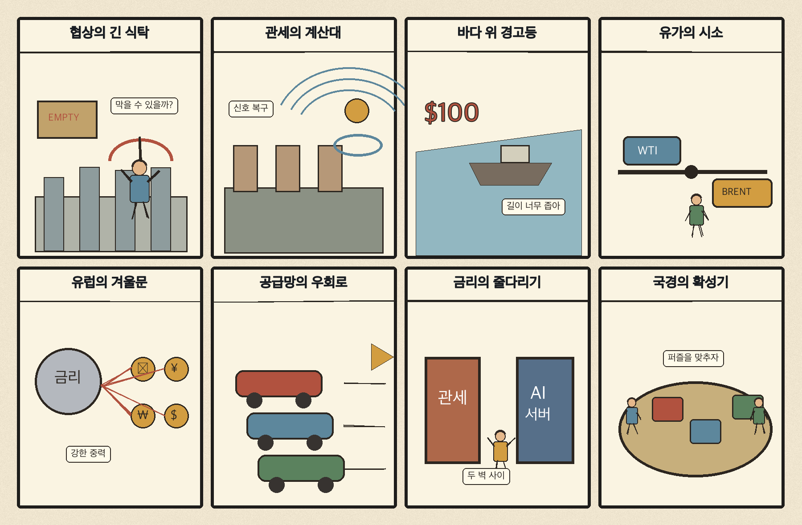
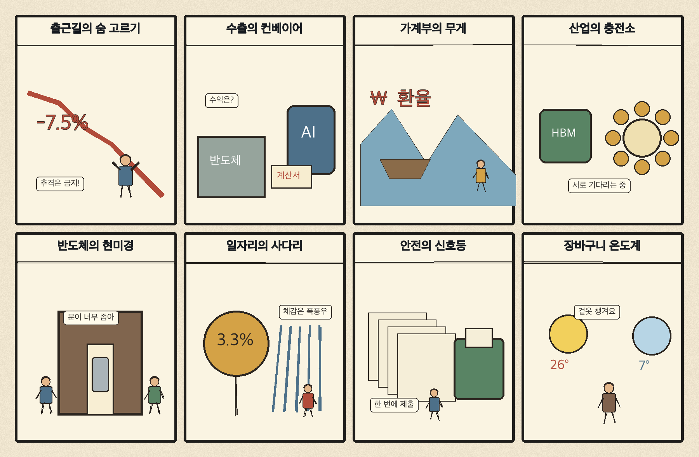

01
마이크론 · 707.70→629.79달러 · -11.01%
내용요약 전날 반도체 급등을 되돌리며 전일 종가 대비 11.01% 하락했습니다.
예상여파 국내 메모리·HBM 공급망의 단기 차익실현 압력을 높일 수 있습니다.
MORNING_BRIEFING_20261125
작성 시각: 2026-11-25 06:36 KST · 직전 미국 정규장과 2026-11-25 KST 당일 공개 기사 기준
직전 미국 정규장인 11월 24일 뉴욕증시는 다우 +0.85%, S&P 500 -0.50%, 나스닥 -1.48%로 혼조 마감했습니다. 전날 폭등했던 엔비디아는 -5.86%, 마이크론은 -11.01%로 차익실현이 집중됐습니다. 전날 KOSPI가 +6.32% 반등한 직후라 오늘 한국장은 반도체 중심의 되돌림 위험과 지수 5,000선 안착 여부를 함께 확인해야 합니다.
| 지수 | 종가 | 등락률 | 한국 증시 시사점 |
|---|---|---|---|
| 다우존스 | 50,018.70 | +0.85% | 경기민감·방어주 지지 |
| S&P 500 | 7,201.09 | -0.50% | 대형주 혼조 |
| 나스닥 종합 | 23,733.54 | -1.48% | AI·반도체 차익실현 |
AI 반도체의 전날 급등 뒤 차익실현이 나왔습니다.
AI 대형주의 하루 변동성이 다시 확대됐습니다.
전날 5,006.03으로 반등해 5,000선 안착을 시험합니다.
미국과 한국의 엇갈린 흐름 속 시가 수급을 먼저 봅니다.
11월 24일 보고서는 장전 예상 갭과 검증 표본 부족으로 공식 추천을 내지 않았습니다. 사후 급등 종목을 추천 기록에 추가하지 않습니다.
| 시장 | 종가 | 등락률 | 기준 |
|---|---|---|---|
| KOSPI | 5,006.03 | +6.32% | 11월 24일 · 시가 대비 +2.58% |
| KOSDAQ | 665.88 | +4.79% | 11월 24일 · 시가 대비 +1.77% |
| 다우존스 | 50,018.70 | +0.85% | 미국 11월 24일 정규장 |
| S&P 500 | 7,201.09 | -0.50% | 미국 11월 24일 정규장 |
| 나스닥 종합 | 23,733.54 | -1.48% | 미국 11월 24일 정규장 |
액센츄어 +4.51%, 스포티파이 +2.39%, 홈디포 +2.20%였습니다.
월마트 +2.11%, 유나이티드헬스 +1.73%, 다이아몬드백 +1.67%였습니다.
마이크론 -11.01%, AMD -8.86%, ARM -8.55%였습니다.
마벨 -9.10%, 인텔 -8.15%, 슈퍼마이크로 -7.79%였습니다.
내용요약 전날 반도체 급등을 되돌리며 전일 종가 대비 11.01% 하락했습니다.
예상여파 국내 메모리·HBM 공급망의 단기 차익실현 압력을 높일 수 있습니다.
내용요약 AI 네트워크 반도체주 차익실현으로 전일 종가 대비 9.10% 밀렸습니다.
예상여파 AI 인프라 전반의 밸류에이션 부담이 다시 부각될 수 있습니다.
내용요약 AI칩 업종 약세 속 전일 종가 대비 8.86% 하락했습니다.
예상여파 국내 반도체주의 시가 변동성과 외국인 수급을 보수적으로 볼 신호입니다.
내용요약 전날 급등 뒤 전일 종가 대비 8.55% 하락했습니다.
예상여파 고밸류 반도체 설계주의 변동성 확대를 보여줍니다.
내용요약 조사군에서 두드러진 강세로 전일 종가 대비 4.51% 상승했습니다.
예상여파 기업 IT서비스 수요가 AI칩 조정과 별개로 견조할 가능성을 시사합니다.
미국 나스닥과 AI 반도체 조정은 전날 6.32% 급반등한 KOSPI의 단기 차익실현을 자극할 수 있습니다. 다우는 상승해 전면적 위험회피는 아니지만, 반도체 비중이 큰 한국장은 5,000선 지지와 외국인 현·선물 수급이 중요합니다. 시가 하락 뒤 회복 여부를 확인하고 반도체 약세를 무리하게 저가매수하지 않아야 합니다.
오늘은 추천 없음 — 현금 관망
전날 국내 지수 급반등과 밤사이 미국 AI 반도체 급락이 충돌해 시가 방향과 수급의 불확실성이 큽니다. 당일 시가·실시간 수급을 확인하기 전에는 종합점수 75점·상승확률 60%·예상 손익비 1.5와 30건 이상 보정 표본을 동시에 검증할 수 없습니다.
관심 연결종목 대형 반도체·HBM 공급망은 변동성 관찰 대상일 뿐 매수 추천이 아닙니다. 하락 출발 종목의 성급한 저가매수와 반등 추격을 모두 금지합니다.
전날 돌파한 지수대의 장중 지지 여부를 봅니다.
반도체 조정 속 동반 순매수 유지 여부를 확인합니다.
과잉생산 관세의 품목·한국 적용 조건을 점검합니다.
선박 피격과 구난 차단이 유가·운임에 미치는 영향을 봅니다.
핵심 요약: AI 반도체는 전날 폭등 뒤 큰 폭 조정을 받았습니다. 기술 뉴스의 초점은 에이전트 기억 보안, 산업기술 보호, AI 인재의 취업 연결과 바이오 연구 인프라로 이동했습니다.
내용요약 엔비디아의 전날 급등 뒤 차익실현이 나오며 나스닥이 1.5% 하락했고 AI 반도체 변동성이 다시 확대됐습니다.
예상여파 국내 반도체도 전날 급반등의 일부를 되돌릴 수 있어 실적보다 심리에 따른 시가 급등락을 경계해야 합니다.
내용요약 기억 기능을 갖춘 AI 에이전트가 공격자에게 장기 개인정보와 업무 맥락을 노출할 수 있다는 보안 문제를 짚었습니다.
예상여파 에이전트 도입 기업은 최소권한·기억 삭제·접근기록 통제를 제품 도입과 동시에 설계해야 합니다.
내용요약 AI 부트캠프 수료생과 기업을 연결하는 경진대회·채용설명회가 열립니다.
예상여파 교육 성과가 실제 취업과 현장 생산성으로 연결되는지가 국내 AI 인재정책의 핵심 평가 기준이 됩니다.
내용요약 정부가 연말 산업기술보호 종합대책 발표를 앞두고 관계부처 최종 점검에 나섰습니다.
예상여파 반도체·AI 등 핵심기술 기업의 보안 투자와 협력사 관리 의무가 강화될 가능성이 있습니다.
내용요약 중기부가 송도 K-바이오 랩허브에 공동 연구장비 실험실을 열었습니다.
예상여파 바이오 스타트업의 초기 장비비 부담을 낮추고 실험·사업화 속도를 높이는 기반이 될 수 있습니다.
핵심 요약: 미국의 과잉생산 관세 발표 가능성과 호르무즈 해협의 선박 위험이 무역·에너지 비용을 흔들고 있습니다. 유럽에서는 우크라이나 지원기업 보안과 EU 가입 외교가 동시에 움직였고 미국 소비심리는 반등했습니다.
내용요약 미국이 과잉생산을 겨냥한 새 관세 조치를 이르면 오늘 발표할 수 있으며 한국에는 기존 15% 유지가 예상된다는 외신 보도입니다.
예상여파 대미 수출기업은 품목별 예외와 원산지 규정이 확정될 때까지 가격·물량 계획을 보수적으로 운용해야 합니다.
내용요약 호르무즈 해협에서 피격 선박 구난을 막으려는 움직임이 이어지며 예인선까지 블랙리스트에 올랐습니다.
예상여파 원유 수송 차질 우려가 커지면 유가와 해상보험료가 함께 올라 물류비 변동성을 키울 수 있습니다.
내용요약 영국이 우크라이나 지원기업을 겨냥한 러시아의 사보타주 가능성을 이례적으로 공개 경고했습니다.
예상여파 유럽 방산·물류 기업의 물리·사이버 보안 비용이 늘고 공급 일정 관리가 까다로워질 수 있습니다.
내용요약 우크라이나와 헝가리가 관계 개선 움직임을 보이면서 우크라이나의 유럽연합 가입 논의가 속도를 낼 가능성이 제기됐습니다.
예상여파 유럽 내 정치적 거부권이 완화되면 지원·재건 논의에는 긍정적이지만 실제 협상은 장기화할 수 있습니다.
내용요약 미국의 11월 소비자신뢰지수가 두 달 연속 반등해 1년 10개월 만의 최고 수준을 기록했습니다.
예상여파 소비 견조함은 경기침체 우려를 낮추지만 금리 인하 기대를 늦추는 요인으로도 작용할 수 있습니다.

핵심 요약: 서울지하철 파업 철회로 출근길 불확실성은 해소됐습니다. 기업 심리는 내수와 수출이 엇갈리고, 대기업 자본의 반도체 집중·EU 재생원료 규제·식품물가가 산업과 가계의 주요 변수입니다.
내용요약 서울지하철 1·2·3노조가 임단협을 타결해 예고됐던 파업을 철회하고 정상 운행합니다.
예상여파 출근길 교통대란 위험이 해소돼 시민 이동과 도심 영업 차질 우려가 줄었습니다.
내용요약 국내 500대 기업 이익잉여금이 1천862조원으로 집계됐고 삼성전자와 SK하이닉스 비중이 37%에 달했습니다.
예상여파 대기업의 투자 여력은 커졌지만 자본이 반도체 대형사에 집중된 구조도 함께 확인됩니다.
내용요약 기업 체감경기가 한 달 만에 악화했지만 내수기업 심리는 4년 6개월 만의 최고 수준을 기록했습니다.
예상여파 내수 회복 기대와 수출 둔화 우려가 엇갈려 업종별 실적 차별화가 커질 수 있습니다.
내용요약 유럽연합의 재생원료 사용 의무가 확대되지만 국내 수출기업 43%가 규제 내용을 모른다는 조사 결과입니다.
예상여파 대응이 늦으면 인증·원가 부담과 납기 차질이 생길 수 있어 공급망 추적 체계 구축이 시급합니다.
내용요약 계란 산지가격 하락에도 소매가격은 올랐고 고병원성 조류인플루엔자 확산 우려가 이어졌습니다.
예상여파 식품 물가와 외식 원가 부담이 단기간에 완화되지 않을 수 있어 방역과 유통마진 점검이 중요합니다.
